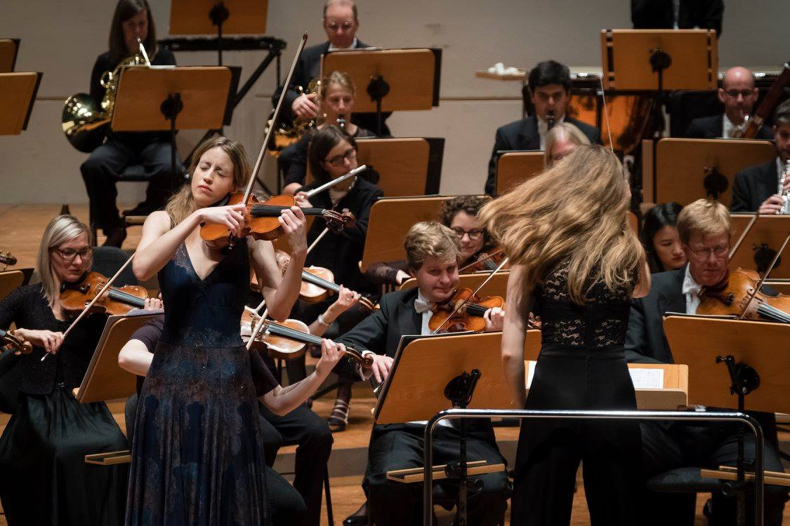

Media Gallery
Explore Fran Vilde's performances through photos, videos, and audio recordings
Photos
Videos
Audio



Tchaikovsky Violin Concerto in D major

Bach Partita No. 2 in D minor

Sibelius Violin Concerto in D minor

Brahms Violin Sonata No. 3 in D minor
Beethoven: Violin Sonata No. 9 "Kreutzer"
Ludwig van Beethoven
38:24
Mendelssohn: Violin Concerto in E minor
Felix Mendelssohn
26:15
Paganini: Caprice No. 24
Niccolò Paganini
4:42
Brahms: Violin Concerto in D major
Johannes Brahms
33:56
Bach: Chaconne from Partita No. 2
Johann Sebastian Bach
13:28